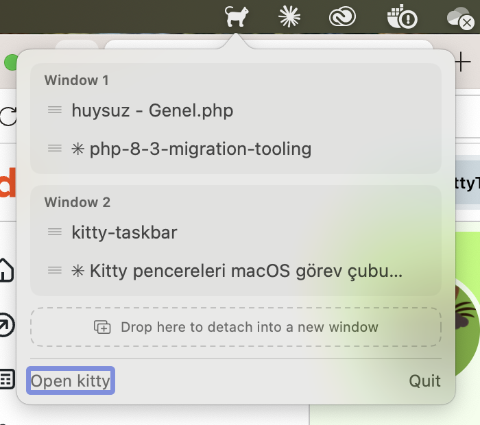

A taskbar for kitty,
in your menu bar.
macOS has no per-window taskbar, and the Dock groups every kitty window under one icon. KittyTaskbar lists all your kitty windows and tabs from the menu bar — one click away.

Small app, does one thing well
Every window, every tab
Lists all kitty OS windows and their tabs, grouped per window, refreshed every time the panel opens.
One-click focus
Click a tab to focus it and bring kitty to the front. The active tab shows a checkmark.
Drag & drop tabs
Drag a tab by its grip handle onto another window group to move it there.
Detach into a new window
Drop a tab onto the dashed area at the bottom to detach it into its own OS window.
Splits included
Splits inside a tab are listed as indented rows — and they're clickable too.
Multiple instances
Works with several running kitty instances at once. Signed and notarized by Apple.
Enable kitty remote control
KittyTaskbar talks to kitty over its remote control socket. Add these two lines to ~/.config/kitty/kitty.conf and restart kitty:
allow_remote_control yes listen_on unix:/tmp/kitty-{kitty_pid}
Up and running in a minute
Homebrew
$ brew tap muarifer/tap $ brew trust muarifer/tap $ brew install --cask kitty-taskbar
Releases are signed with a Developer ID certificate and notarized by Apple — Gatekeeper allows them without extra steps.
From source
$ git clone https://github.com/muarifer/kitty-taskbar.git $ cd kitty-taskbar $ ./build.sh $ open KittyTaskbar.app
To start at login, add KittyTaskbar.app to System Settings → General → Login Items.